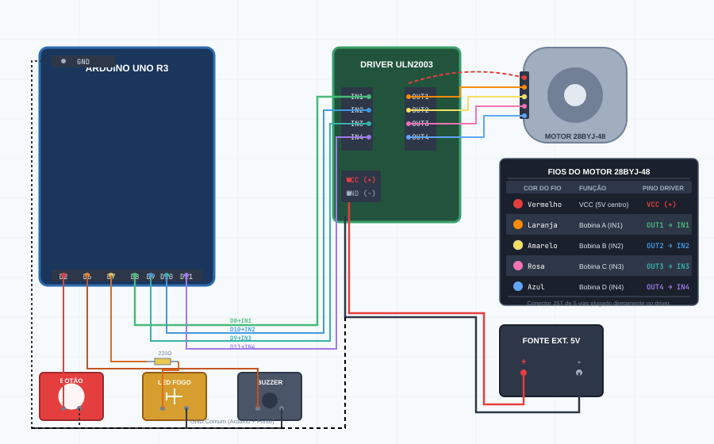
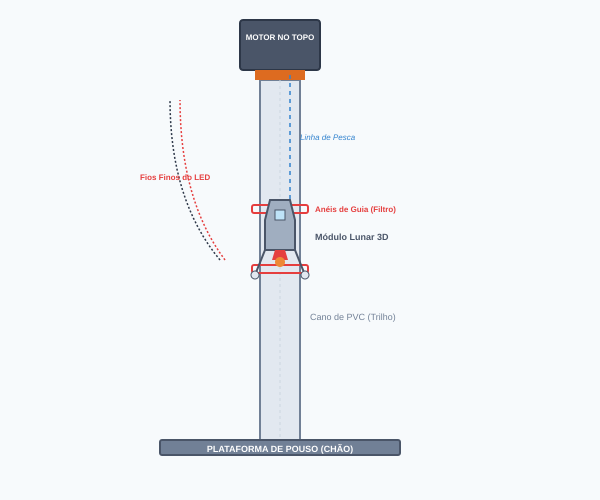

Projeto Interativo — Pouso do Módulo Lunar
Instruções completas para fiação eletrônica, programação do Arduino e montagem mecânica do módulo lunar guiado por trilho de PVC com propulsor ativo.
O Pouso Lunar Interativo é uma maquete funcional que simula o histórico pouso do Módulo Lunar (LEM) na Lua. Os estudantes e visitantes da feira assumem o papel de piloto, controlando os propulsores através de um botão físico para realizar um pouso suave — velocidade de impacto menor que 2,5 m/s simulados.
O firmware executa em tempo real as equações de movimento pelo método de
Integração de Euler a cada iteração do loop():
| Variável | Equação no Código | Significado |
|---|---|---|
| Aceleração | a = GRAVIDADE − EMPUXO |
1,62 m/s² (lunar). Com botão: subtrai 3,50 m/s² de empuxo. |
| Velocidade | vel += a × dt |
Acumulada a cada frame. Positiva = descendo. |
| Altitude | alt −= vel × dt |
De 100 % (topo) até 0 % (chão). Mapeada para passos do motor. |
| Combustível | fuel −= 15 × dt |
Inicia em 100 %. Quando zerado, empuxo é cortado. |
Aguarda o primeiro pressionamento do botão para iniciar a descida.
Física ativa. Motor em movimento. Botão controla empuxo.
Velocidade de impacto ≤ 2,5 m/s. Melodia de vitória.
Impacto acima do limite → som de explosão → motor rebobina para o topo.
Certifique-se de ter todos os componentes antes de iniciar a montagem. Cada item será conectado ao Arduino Uno R3 ou ao driver de motor.
| Componente | Função no Projeto | Especificações |
|---|---|---|
| Arduino Uno R3 | Processa cálculos físicos, lê o botão e controla motor, LED e buzzer. | Também pode ser Arduino Nano (5 V). |
| Motor de Passo 28BYJ-48 | Gera rotação precisa para enrolar/desenrolar a linha do módulo. | 5 V DC · 2048 passos/volta · unipolar 4 fases. |
| Driver ULN2003 | Fornece corrente suficiente para acionar as bobinas do motor. | Módulo com 4 LEDs indicadores de bobina. Conectores JST já incluídos. |
| Botão Arcade (Fliperama) | Ativa o propulsor (Thrust). Robusto para muitos acionamentos. | Tipo NA (Normalmente Aberto). Conexão direta pino + GND. |
| LED Difuso Laranja/Vermelho | Simula o escapamento de fogo na base do módulo lunar. | Alto brilho, 5 mm ou 10 mm. |
| Resistor 220 Ω | Limita a corrente do pino digital para o LED. | Código: Vermelho–Vermelho–Marrom–Dourado (tolerância 5 %). |
| Buzzer Passivo | Reproduz efeitos sonoros via tone(): propulsor, vitória, explosão. |
Frequência de trabalho: 100 Hz – 10 kHz. |
| Fonte Externa 5 V / 1 A | Alimenta exclusivamente o driver do motor para evitar resets no Arduino. | Fonte USB de celular, powerbank ou 4 pilhas AA em série. |
| Fios Jumper | Interligam todos os componentes. | Macho–Macho e Macho–Fêmea (mínimo 20 unidades). |
| Protoboard | Base para organizar as conexões sem solda. | 830 pontos (recomendado) ou 400 pontos. |
Siga a tabela de conexões abaixo rigorosamente. Os pinos do Arduino devem bater exatamente com os declarados no firmware para o projeto funcionar corretamente.
| Componente | Terminal | Pino Arduino | Observações |
|---|---|---|---|
| Driver ULN2003 (Motor 28BYJ-48) |
IN1 | D8 |
Ordem exata do construtor no código:
Stepper motor(2048, 8, 10, 9, 11).
Não trocar D9 e D10! |
| IN2 | D10 | ||
| IN3 | D9 | ||
| IN4 | D11 | ||
| VCC (+) | Fonte 5V + | Fonte externa. Nunca usar o 5V do Arduino! | |
| GND (−) | GND Comum | GND da fonte externa e GND do Arduino juntos. | |
| Botão Arcade (Propulsor) |
Terminal 1 | D2 | Pino configurado como INPUT_PULLUP. Sem resistor externo. |
| Terminal 2 | GND | Ao pressionar, o pino lê LOW (ativa propulsão). |
|
| LED Fogo (Módulo Lunar) |
Anodo (+) via R=220Ω | D7 | Resistor em série com a perna longa do LED. |
| Catodo (−) | GND | Perna mais curta do LED direto ao GND. | |
| Buzzer Passivo | Positivo (+) | D6 | Terminal marcado com + no corpo do buzzer. |
| Negativo (−) | GND | Terminal sem marcação ou marcado com −. |
Stepper(2048, 8, 10, 9, 11) inverte logicamente D9 e D10 para
garantir a sequência correta de acionamento das bobinas do 28BYJ-48.
Na prática física: D10 → IN2 e D9 → IN3.
Trocar esses dois fios fará o motor vibrar sem girar ou girar de forma irregular.
O motor 28BYJ-48 possui um conector JST de 5 vias que se encaixa diretamente no driver ULN2003. Cada fio tem uma cor padrão de fábrica que corresponde a uma bobina interna. Confira a tabela antes de plugar:
| Cor do Fio | Identificação | Função / Bobina | Pino Driver | Observações |
|---|---|---|---|---|
| Vermelho | VCC — Centro | Alimentação das bobinas (ponto central) | VCC (+) 5V | Fio do meio no conector. Sempre vai ao VCC da fonte externa. |
| Laranja | Bobina A | Fase 1 — IN1 do driver | OUT1 | Primeiro fio após o vermelho. |
| Amarelo | Bobina B | Fase 2 — IN2 do driver | OUT2 | Sequência natural do conector. |
| Rosa | Bobina C | Fase 3 — IN3 do driver | OUT3 | Sequência natural do conector. |
| Azul | Bobina D | Fase 4 — IN4 do driver | OUT4 | Último fio do conector. |
Stepper(2048, 8, 10, 9, 11).

O 28BYJ-48 é um motor unipolar de 4 fases que exige uma sequência específica de
acionamento das suas bobinas internas. Usando a biblioteca Stepper.h
com os pinos na ordem físicamente sequencial (8, 9, 10, 11), o motor pode
vibrar, esquentar ou não girar.
A solução é declarar o construtor com a ordem intercalada
8, 10, 9, 11:
// Pinos ao Driver ULN2003: IN1=D8 IN2=D10 IN3=D9 IN4=D11 // A inversão de D9 e D10 no construtor é INTENCIONAL — corrige // a sequência de fases do 28BYJ-48 com a Stepper.h padrão. const int PASSOS_POR_VOLTA = 2048; Stepper meuMotor(PASSOS_POR_VOLTA, 8, 10, 9, 11);
Em vez de usar um resistor externo de 10 kΩ para estabilizar o pino do botão, ativamos o pull-up interno do ATmega diretamente no firmware:
pinMode(PIN_BOTAO_PROPULSOR, INPUT_PULLUP); // Pino 2 puxado internamente a 5V
Com isso, o pino 2 mantém-se em nível HIGH (5 V) quando o botão
está solto. Ao pressionar, o circuito é fechado ao GND e o Arduino lê
LOW — ativando o empuxo.
A constante PASSOS_CURSO_TOTAL define quantos passos o motor
precisa dar para mover o módulo do topo até o chão físico.
Calcule conforme o comprimento do seu trilho e o diâmetro do carretel:
// Fórmula: comprimento_trilho_mm / (π × diâmetro_carretel_mm) × 2048 // Exemplo (trilho = 1 m, carretel ∅ = 16 mm): // 1000 / (3,14159 × 16) ≈ 19,9 voltas → 19,9 × 2048 ≈ 40755 passos const long PASSOS_CURSO_TOTAL = 8192; // Ajuste aqui!
A mecânica é o que dará o aspecto realista e interativo ao experimento. Abaixo estão as diretrizes de montagem física usando materiais de fácil acesso.

Após concluir a fiação e a montagem mecânica, siga o roteiro de testes antes de apresentar o projeto ao público.
"--- POUSO LUNAR INICIADO ---" e a melodia de início
no buzzer. Caso contrário, verifique o cabo USB e a porta COM selecionada.
"Descendo..." e o motor deve começar
a girar soltando a linha. Pressionar continuamente deve reduzir a velocidade
e acender o LED de fogo.
11, 9, 10, 8.
PASSOS_CURSO_TOTAL no código até o módulo
chegar fisicamente ao chão exatamente quando a altitude simulada
atinge zero.
| Sintoma / Falha | Causa Provável | Solução |
|---|---|---|
| Motor apenas vibra e não gira. | Sequência de bobinas incorreta ou GND da fonte não conectado ao GND do Arduino. | Confirme D8→IN1, D10→IN2, D9→IN3, D11→IN4. Junte os GNDs. |
| Motor gira na direção errada (sobe em vez de descer). | Motor montado de cabeça para baixo ou pinos em ordem invertida. | Inverta a montagem física do motor ou troque a ordem dos pinos no construtor Stepper. |
| Arduino reinicia aleatoriamente ao girar o motor. | Queda de tensão — motor sendo alimentado pelo 5V do Arduino. | Conecte VCC do driver a uma fonte externa de 5V independente. |
| Módulo trava no meio do trilho e não desce. | Atrito excessivo nas guias ou módulo muito leve. | Aplique cera ou spray de silicone no cano. Adicione pesos metálicos ao módulo. |
| Botão não responde ou empuxo permanece ligado. | Falha de conexão no pino D2 ou protoboard com curto. | Verifique D2 → Botão T1 e GND → Botão T2. Confirme INPUT_PULLUP no firmware. |
| LED não acende ao pressionar o botão. | Polaridade invertida ou resistor ausente. | Verifique o resistor 220Ω em série com o anodo (perna longa). Catodo ao GND. |
| Buzzer não emite som ou emite som constante. | Buzzer ativo conectado ao invés de passivo, ou polaridade invertida. | Use buzzer passivo (sem oscilador interno). Verifique positivo ao D6 e negativo ao GND. |
| Módulo não para no chão (ultrapassa ou para antes). | Valor de PASSOS_CURSO_TOTAL incorreto. |
Meça o curso real e recalcule: voltas × 2048 passos. |
pouso_lunar.ino — Firmware completo do Arduinoesquema_eletrico.svg / .png — Diagrama de conexõesesquema_mecanico.svg / .png — Diagrama mecânico do trilhotutorial_pouso_lunar.html / .pdf — Esta documentação